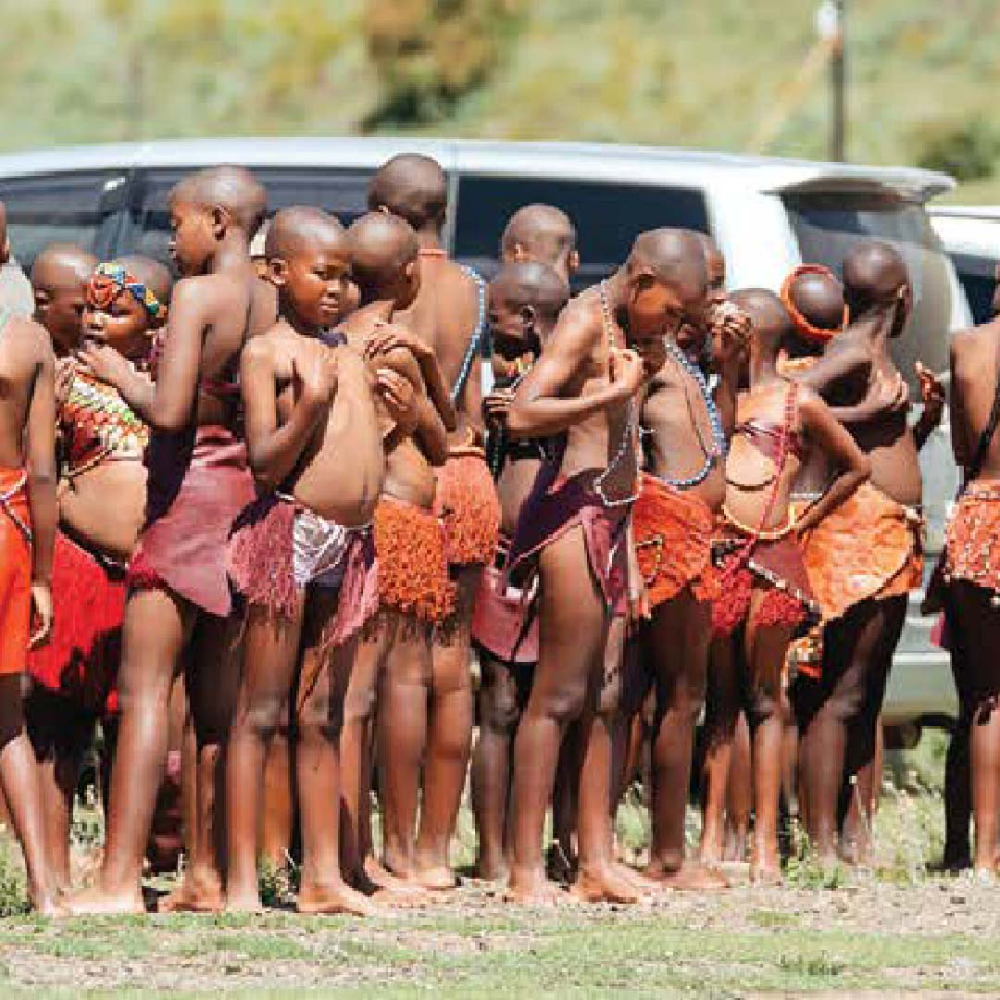
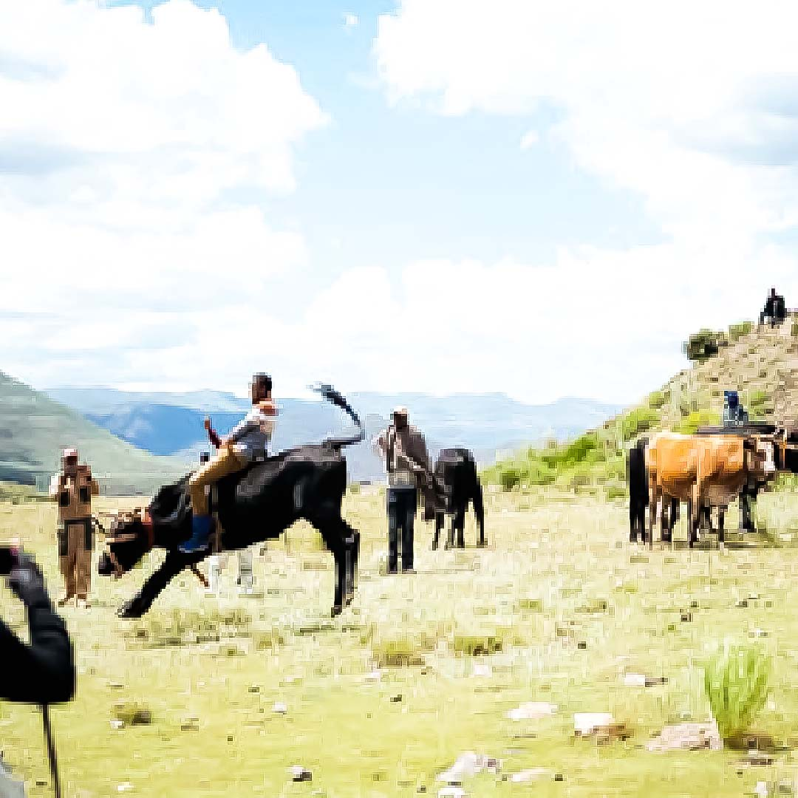
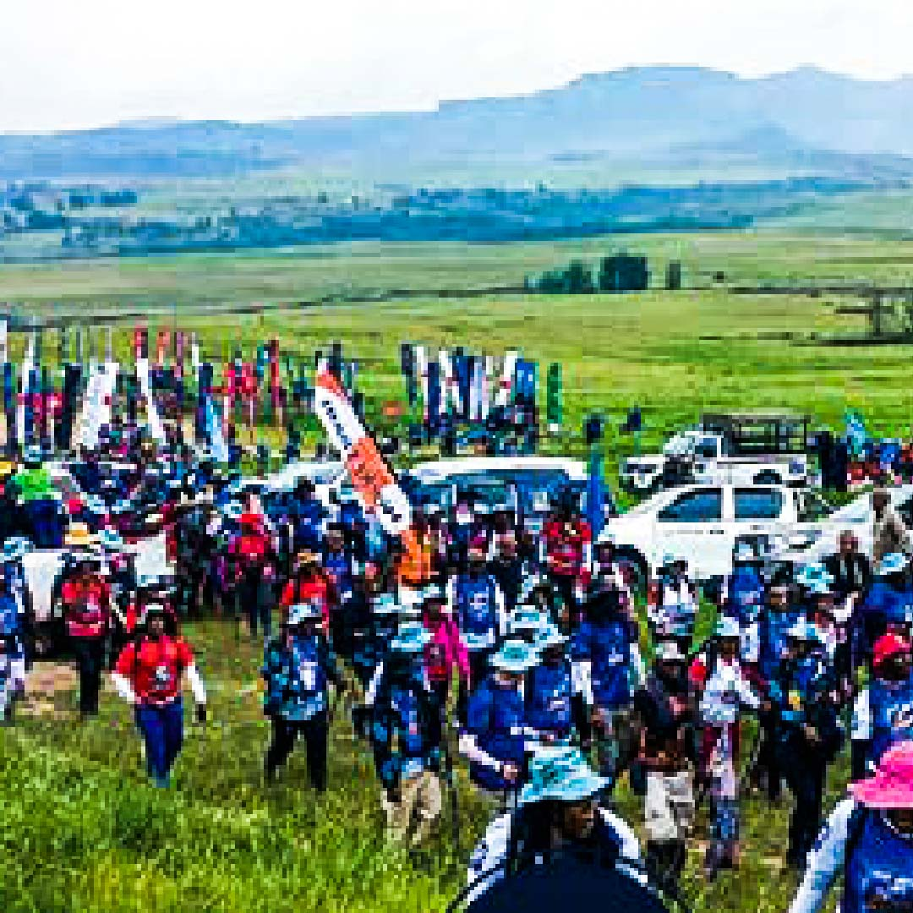
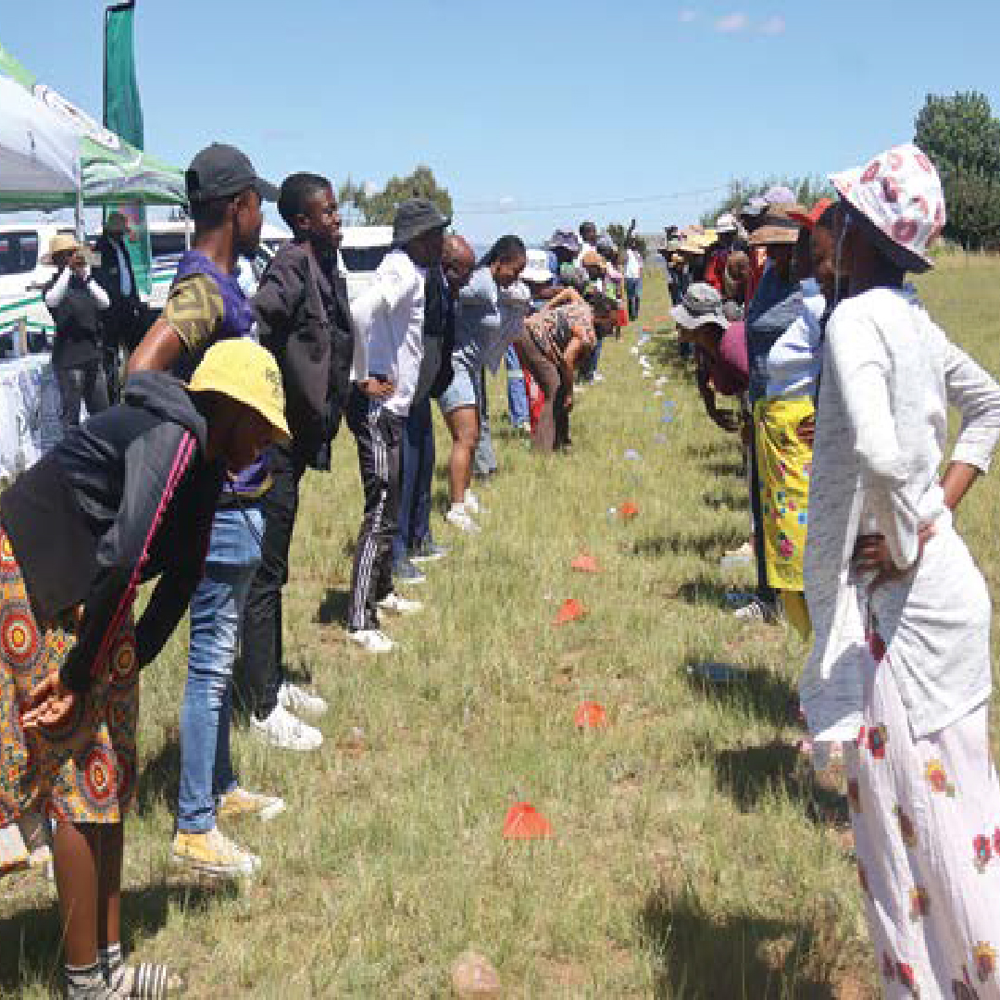

LHDA Backed Katse Tourism Festival 2026 with over M1 million in support

Leribe -The headline sponsor of the Katse Tourism Festival 2026, the Lesotho Highlands Development Authority (LHDA), providedmillion in cash and in-kind contributions. “The success of the Katse Tourism Festival in unlocking tourism-driven economic opportunities. As headline sponsor, LHDA supported the festival logistically and in cash and in-kind,” LHDA stated. The dedication of the organising committee, led by Katse Dam Action and Aid, alongside partners Jam Sessions and Leseli Tours.
"The collaboration demonstrates how tourism events can stimulate local economies while celebrating culture and community identity,” LHDA added.
Held from Thursday, February 26 to Saturday, February 28, 2026, in the highlands around the iconic Katse Dam, this year’s festival showed renewed and visible growth. It expanded beyond its traditional weekend format, drawing exceptional participation from local schools and surrounding communities.

The addition of Thursday marked steady progress, with the day dedicated primarily to school activities involving 16 primary schools.This brought vibrant colour, excitement, and a deeper sense of community ownership. From early Thursday through Saturday night, the festival grounds buzzed with children in school uniforms, teachers guiding performances, and parents cheering. Traditional dances, poetry, choral performances, and cultural displays took centre stage as young learners showcased their talents against the stunning backdrop of the dam and mountains.
Selikane Rakuoane, the chairperson of Katse action and aid highlighted the significance of the Thursday programme. "In the beginning we focused only on the main weekend days, but now we are seeing real expansion," Rakuoane said. "Sixteen pirmary schools participated this year. That alone shows that the festival is growing." He descibed the vision as the long term and acknowledged that progress was gradual but optimistic. "This event will eventual become what we want it to be. It takes baby steps. Growth does not happen overnight, but we are moving in the right direction," he said.
Rakuoane stressed the need for stronger partnership particularly with Lesotho Tourism Development Corporation (LTDC). "We need the Lesotho Tourism Development corporation nd others to fully support. If we work together, this can become one of tourism big events in the country," He concluded.
Trials and Triumphs Trekking the Beautiful yet Challenging Moshoeshoe Walk

Leribe -The annual walk tracing the steps of Morena Moshoeshoe is a blend of adventure, challenge and reflection. Trekkers walk through rugged mountains, cross swollen rivers and traverse vast plateaus during the 116km journey, which spans three days. The Moshoeshoe Walk, organised by T-Connexion Marketing and Tours, started in 2007 and has since grown in leaps and bounds.The walk is launched by King Letsie III at Menkhoaneng in the Leribe district. Day one, which covers 31km, concludes at Thaba-Phatsoa. The following day, the toughest leg of the journey begins in the early hours of the morning at 3:30am, covering a 54km distance to the next destination in Malimong. From there, the following morning, the walkers march to Thaba-Bosiu, where the walk ends.
The walk commemorates Morena Moshoeshoe, although he and his subjects reportedly took nine days to reach Thaba- Bosiu while fleeing from enemies and seeking refuge. Morena Moshoeshoe, the founder of the Basotho nation, is said to have set out from Menkhoaneng in 1824 to seek refuge at Thaba-Bosiu, particularly during the Lifaqane wars. According to history, there was no unified kingdom when he was born, as Basotho lived in many separate clans. Morena Moshoeshoe united them into one nation. He is celebrated for his leadership, diplomacy, love of peace and many other admirable traits. The hikers traverse Basotho communities, walking long distances sometimes under unfriendly weather conditions. They climb mountains and cross rivers and streams to reach their next destination. This year was no different.
One of the hikers, Minister of Information, Communications, Science, Technology and Innovation, Nthati Moorosi, said hikers do not fear the rain as they usually come prepared with full rain gear. However, she noted that what they fear most are raging rivers. She promised to raise the matter with the government and advocate for the construction of more footbridges. She also urged Thabo Maretlane to support the proposal to strengthen the case.
This year, hikers were also encouraged to walk in solidarity with those affected by the war in the Middle East and to promote diplomacy, tolerance and peace. During the closing ceremony at Thaba-Bosiu, the King praised the resilience of the hikers and commended their dedication to completing the demanding journey. Fortunately, there were no casualties reported.
LSRC Launches Grassroots Sports Leadership Drive

Leribe -The Lesotho Sports and Recreation Commission (LSRC) has launched a community sports leadership initiative aimed at pro- moting active lifestyles while strengthening local sports management structures. The programme, known as the Certified Leadership Course (CLC) Community Pro- ject Implementation, was recently launched at Selesele Football Club ground in Ha Mo- tolo, Berea. It seeks to equip community members with leadership skills while encouraging wider participation in physical activities to improve public health.
Representing the Ministry of Tourism, Sports, Arts and Culture, ‘Matšepo Khau said sport should not only be associated with global competitions but should also be viewed as an essential part of everyday life that contributes to the wellbeing of Ba- sotho. She explained that physical activity plays a key role in preventing many communica- ble and non-communicable diseases affect- ing the population. Khau encouraged members of the public to incorporate simple forms of exercise into their daily routines, noting that activities such as walking can significantly improve health without the need for organised sport.
LSRC’s Deputy President Kamohelo Hlo- misi said the initiative aims to unite com- munities through sport while also creating opportunities for personal and economic development. According to Hlomisi, the Certified Leadership Course was designed to empower individuals with practical knowledge in sports leadership and administration. Par- ticipants are expected to apply the skills gained to implement community-based sport and fitness projects that encourage broader public participation.
He said the programme will be rolled out in five districts, Mafeteng, Berea, Botha- Bothe, Leribe and Qacha’s Nek, with each district implementing activities tailored to the needs of its communities. Hlomisi added that the initiative pro- motes healthy living by encouraging people to remain physically active and adopt positive lifestyle habits such as balanced diets and productive activities including farming and walking. He further noted that sport can play a crucial role in addressing social challenges among young people. By engaging youth in constructive activities, he said, sport can help reduce problems such as teenage pregnancy and behavioural issues within communities.
LSRC Public Relations Officer Advocate Jobo Raswoko said the project follows ear- lier training conducted in partnership with TAFISA in November, where community representatives were trained to design pro- jects that support sport and health develop- ment. Raswoko explained that the trained par- ticipants will now implement the initiatives in their respective communities following the official launch. The CLC Community Project is expected to boost grassroots participation in sport while fostering healthier lifestyles across the participating districts.